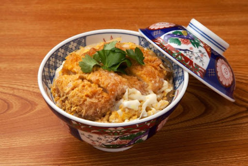

カツ丼

One of the most tasty recipes in Japanese Kitchen
This recipes is quite simple but the flavour will surprise you. Combining some traditional preparation of Katsu and rice into a bowl of rice
Ingredients:
- 1 Tonkatsu
- 1/4 cup Dashi
- 1 Tbsp soy sauce
- 1/2 Tbsp sugar
- 1/2 Tbsp sugar
- 1/2 Tbsp Sake
- 1/2 Tbsp Mirin
- 2 eggs
- green onions chopped (optional)
- Steamed Rice
- Nori roasted seaweed thinly sliced
Steps:
- Cut Tonkatsu into strips, set aside.
- In a small frying pan, add Dashi, soy sauce, sugar, Sake, and Mirin, and cook at medium heat until it boils. Reduce heat to low-medium.
- Add cut Tonkatsu to the sauce in the pan. Beat egg(s) in a small bowl and pour over the Tonkatsu. Cover and cook for 1 minute. Sprinkle chopped green onions if you like.
- Slide Tonkatsu and egg(s) with sauce over rice in a bowl.
- Sprinkle sliced Nori on top.